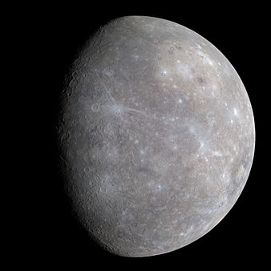
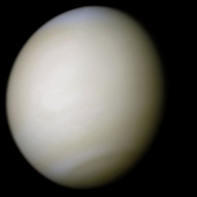
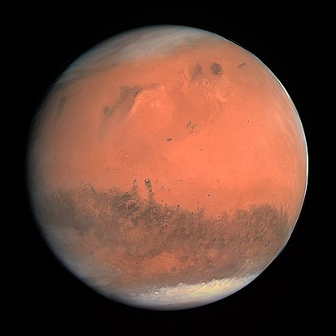
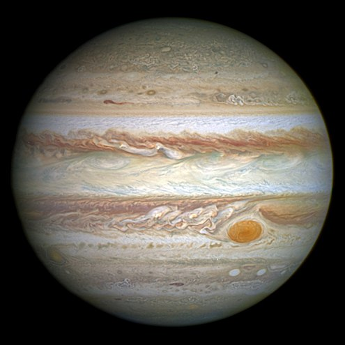
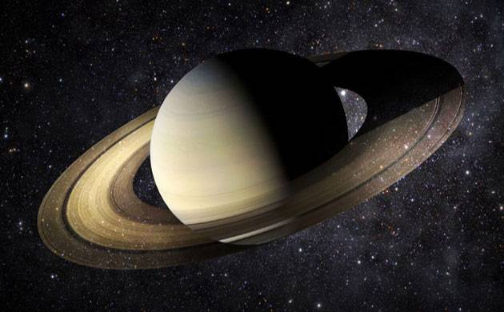
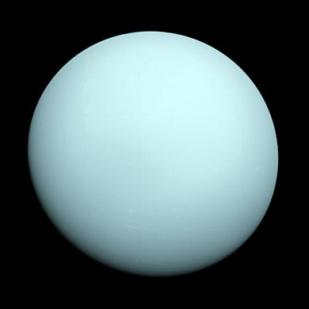

Mercury
Mercury is the smallest and innermost planet in the Solar System. Its orbital period around the Sun of 88 days is the shortest of all the planets in the Solar System. It is named after the Roman deity Mercury, the messenger to the gods.
Like Venus, Mercury orbits the Sun within Earth's orbit as an inferior planet, so it can only be seen visually in the morning or the evening sky, and never exceeds 28° away from the Sun. Also, like Venus and the Moon, the planet displays the complete range of phases as it moves around its orbit relative to Earth. Seen from Earth, this cycle of phases reoccurs approximately every 116 days, the so-called synodic period. Although Mercury can appear as a bright star-like object when viewed from Earth, its proximity to the Sun often makes it more difficult to see than Venus.
Mercury is gravitationally locked with the Sun in a 3:2 spin-orbit resonance, and rotates in a way that is unique in the Solar System. As seen relative to the fixed stars, it rotates on its axis exactly three times for every two revolutions it makes around the Sun. As seen from the Sun, in a frame of reference that rotates with the orbital motion, it appears to rotate only once every two Mercurian years. An observer on Mercury would therefore see only one day every two years.
Mercury's axis has the smallest tilt of any of the Solar System's planets (about ?1/30 degree), and its orbital eccentricity is the largest of all known planets in the Solar System.[b] At aphelion, Mercury is about 1.5 times as far from the Sun as it is at perihelion. Mercury's surface appears heavily cratered and is similar in appearance to the Moon's, indicating that it has been geologically inactive for billions of years. Having almost no atmosphere to retain heat, it has surface temperatures that vary diurnally more than on any other planet in the Solar System, ranging from 100 K (-173 °C; -280 °F) at night to 700 K (427 °C; 800 °F) during the day across the equatorial regions. The polar regions are constantly below 180 K (-93 °C; -136 °F). The planet has no known natural satellites.
Two spacecraft have visited Mercury: Mariner 10 flew by in 1974 and 1975; and MESSENGEr, launched in 2004, orbited Mercury over 4,000 times in four years before exhausting its fuel and crashing into the planet's surface on April 30, 2015.
Venus
Venus is the second planet from the Sun, orbiting it every 224.7 Earth days. It has the longest rotation period (243 days) of any planet in the Solar System and rotates in the opposite direction to most other planets. It has no natural satellites. It is named after the Roman goddess of love and beauty. It is the second-brightest natural object in the night sky after the Moon, reaching an apparent magnitude of -4.6 — bright enough to cast shadows at night and, rarely, visible to the naked eye in broad daylight. Orbiting within Earth's orbit, Venus is an inferior planet and never appears to venture far from the Sun; its maximum angular distance from the Sun (elongation) is 47.8°.
Venus is a terrestrial planet and is sometimes called Earth's "sister planet" because of their similar size, mass, proximity to the Sun, and bulk composition. It is radically different from Earth in other respects. It has the densest atmosphere of the four terrestrial planets, consisting of more than 96% carbon dioxide. The atmospheric pressure at the planet's surface is 92 times that of Earth, or roughly the pressure found 900 m (3,000 ft) underwater on Earth. Venus is by far the hottest planet in the Solar System, with a mean surface temperature of 735 K (462 °C; 863 °F), even though Mercury is closer to the Sun. Venus is shrouded by an opaque layer of highly reflective clouds of sulfuric acid, preventing its surface from being seen from space in visible light. It may have had water oceans in the past, but these would have vaporized as the temperature rose due to a runaway greenhouse effect. The water has probably photodissociated, and the free hydrogen has been swept into interplanetary space by the solar wind because of the lack of a planetary magnetic field. Venus's surface is a dry desertscape interspersed with slab-like rocks and is periodically resurfaced by volcanism.
As one of the brightest objects in the sky, Venus has been a major fixture in human culture for as long as records have existed. It has been made sacred to gods of many cultures, and has been a prime inspiration for writers and poets as the "morning star" and "evening star". Venus was the first planet to have its motions plotted across the sky, as early as the second millennium BC.
As the closest planet to Earth, Venus has been a prime target for early interplanetary exploration. It was the first planet beyond Earth visited by a spacecraft (Mariner 2 in 1962), and the first to be successfully landed on (by Venera 7 in 1970). Venus's thick clouds render observation of its surface impossible in visible light, and the first detailed maps did not emerge until the arrival of the Magellan orbiter in 1991. Plans have been proposed for rovers or more complex missions, but they are hindered by Venus's hostile surface conditions.
Earth

Earth is the third planet from the Sun and the only object in the Universe known to harbor life. According to radiometric dating and other sources of evidence, Earth formed over 4 billion years ago. Earth's gravity interacts with other objects in space, especially the Sun and the Moon, Earth's only natural satellite. Earth revolves around the Sun in 365.26 days, a period known as an Earth year. During this time, Earth rotates about its axis about 366.26 times.
Earth's axis of rotation is tilted, producing seasonal variations on the planet's surface.The gravitational interaction between the Earth and Moon causes ocean tides, stabilizes the Earth's orientation on its axis, and gradually slows its rotation.Earth is the densest planet in the Solar System and the largest of the four terrestrial planets.
Earth's lithosphere is divided into several rigid tectonic plates that migrate across the surface over periods of many millions of years. About 71% of Earth's surface is covered with water, mostly by oceans. The remaining 29% is land consisting of continents and islands that together have many lakes, rivers and other sources of water that contribute to the hydrosphere. The majority of Earth's polar regions are covered in ice, including the Antarctic ice sheet and the sea ice of the Arctic ice pack. Earth's interior remains active with a solid iron inner core, a liquid outer core that generates the Earth's magnetic field, and a convecting mantle that drives plate tectonics. Within the first billion years of Earth's history, life appeared in the oceans and began to affect the Earth's atmosphere and surface, leading to the proliferation of aerobic and anaerobic organisms. Some geological evidence indicates that life may have arisen as much as 4.1 billion years ago. Since then, the combination of Earth's distance from the Sun, physical properties, and geological history have allowed life to evolve and thrive. In the history of the Earth, biodiversity has gone through long periods of expansion, occasionally punctuated by mass extinction events. Over 99% of all species that ever lived on Earth are extinct. Estimates of the number of species on Earth today vary widely; most species have not been described. Over 7.4 billion humans live on Earth and depend on its biosphere and natural resources for their survival. Humans have developed diverse societies and cultures; politically, the world has about 200 sovereign states.
Mars
Mars is the fourth planet from the Sun and the second-smallest planet in the Solar System after Mercury. In English, Mars carries a name of the Roman god of war, and is often referred to as the "Red Planet" because the reddish iron oxide prevalent on its surface gives it a reddish appearance that is distinctive among the astronomical bodies visible to the naked eye. Mars is a terrestrial planet with a thin atmosphere, having surface features reminiscent both of the impact craters of the Moon and the valleys, deserts, and polar ice caps of Earth.
The rotational period and seasonal cycles of Mars are likewise similar to those of Earth, as is the tilt that produces the seasons. Mars is the site of Olympus Mons, the largest volcano and second-highest known mountain in the Solar System, and of Valles Marineris, one of the largest canyons in the Solar System. The smooth Borealis basin in the northern hemisphere covers 40% of the planet and may be a giant impact feature. Mars has two moons, Phobos and Deimos, which are small and irregularly shaped. These may be captured asteroids,similar to 5261 Eureka, a Mars trojan.
There are ongoing investigations assessing the past habitability potential of Mars, as well as the possibility of extant life. Future astrobiology missions are planned, including the Mars 2020 and ExoMars rovers. Liquid water cannot exist on the surface of Mars due to low atmospheric pressure, which is less than 1% of the Earth's, except at the lowest elevations for short periods. The two polar ice caps appear to be made largely of water. The volume of water ice in the south polar ice cap, if melted, would be sufficient to cover the entire planetary surface to a depth of 11 meters (36 ft). In November 2016, NASA reported finding a large amount of underground ice in the Utopia Planitia region of Mars. The volume of water detected has been estimated to be equivalent to the volume of water in Lake Superior.
Mars can easily be seen from Earth with the naked eye, as can its reddish coloring. Its apparent magnitude reaches -2.91, which is surpassed only by Jupiter, Venus, the Moon, and the Sun. Optical ground-based telescopes are typically limited to resolving features about 300 kilometers (190 mi) across when Earth and Mars are closest because of Earth's atmosphere.
Jupiter
Jupiter is the fifth planet from the Sun and the largest in the Solar System. It is a giant planet with a mass one-thousandth that of the Sun, but two and a half times that of all the other planets in the Solar System combined. Jupiter and Saturn are gas giants; the other two giant planets, Uranus and Neptune are ice giants. Jupiter has been known to astronomers since antiquity. The Romans named it after their god Jupiter.When viewed from Earth, Jupiter can reach an apparent magnitude of -2.94, bright enough for its reflected light to cast shadows, and making it on average the third-brightest object in the night sky after the Moon and Venus.
Jupiter is primarily composed of hydrogen with a quarter of its mass being helium, though helium comprises only about a tenth of the number of molecules. It may also have a rocky core of heavier elements, but like the other giant planets, Jupiter lacks a well-defined solid surface. Because of its rapid rotation, the planet's shape is that of an oblate spheroid (it has a slight but noticeable bulge around the equator). The outer atmosphere is visibly segregated into several bands at different latitudes, resulting in turbulence and storms along their interacting boundaries. A prominent result is the Great Red Spot, a giant storm that is known to have existed since at least the 17th century when it was first seen by telescope. Surrounding Jupiter is a faint planetary ring system and a powerful magnetosphere. Jupiter has at least 69 moons, including the four large Galilean moons discovered by Galileo Galilei in 1610. Ganymede, the largest of these, has a diameter greater than that of the planet Mercury.
Jupiter has been explored on several occasions by robotic spacecraft, most notably during the early Pioneer and Voyager flyby missions and later by the Galileo orbiter. In late February 2007, Jupiter was visited by the New Horizons probe, which used Jupiter's gravity to increase its speed and bend its trajectory en route to Pluto. The latest probe to visit the planet is Juno, which entered into orbit around Jupiter on July 4, 2016. Future targets for exploration in the Jupiter system include the probable ice-covered liquid ocean of its moon Europa.
Saturn
Saturn is the sixth planet from the Sun and the second-largest in the Solar System, after Jupiter. It is a gas giant with an average radius about nine times that of Earth. It has only one-eighth the average density of Earth, but with its larger volume Saturn is over 95 times more massive. Saturn is named after the Roman god of agriculture; its astronomical symbol () represents the god's sickle.
Saturn's interior is probably composed of a core of iron—nickel and rock (silicon and oxygen compounds). This core is surrounded by a deep layer of metallic hydrogen, an intermediate layer of liquid hydrogen and liquid helium, and finally a gaseous outer layer. Saturn has a pale yellow hue due to ammonia crystals in its upper atmosphere. Electrical current within the metallic hydrogen layer is thought to give rise to Saturn's planetary magnetic field, which is weaker than Earth's, but has a magnetic moment 580 times that of Earth due to Saturn's larger size. Saturn's magnetic field strength is around one-twentieth of Jupiter's. The outer atmosphere is generally bland and lacking in contrast, although long-lived features can appear. Wind speeds on Saturn can reach 1,800 km/h (1,100 mph), higher than on Jupiter, but not as high as those on Neptune.
The planet's most famous feature is its prominent ring system that is composed mostly of ice particles, with a smaller amount of rocky debris and dust. At least 62 moons are known to orbit Saturn, of which 53 are officially named. This does not include the hundreds of moonlets in the rings. Titan, Saturn's largest moon, and the second-largest in the Solar System, is larger than the planet Mercury, although less massive, and is the only moon in the Solar System to have a substantial atmosphere.
Uranus
Uranus is the seventh planet from the Sun. It has the third-largest planetary radius and fourth-largest planetary mass in the Solar System. Uranus is similar in composition to Neptune, and both have different bulk chemical composition from that of the larger gas giants Jupiter and Saturn. For this reason, scientists often classify Uranus and Neptune as "ice giants" to distinguish them from the gas giants. Uranus's atmosphere is similar to Jupiter's and Saturn's in its primary composition of hydrogen and helium, but it contains more "ices" such as water, ammonia, and methane, along with traces of other hydrocarbons. It is the coldest planetary atmosphere in the Solar System, with a minimum temperature of 49 K (-224 °C; -371 °F), and has a complex, layered cloud structure with water thought to make up the lowest clouds and methane the uppermost layer of clouds. The interior of Uranus is mainly composed of ices and rock.
Uranus is the only planet whose name is derived directly from a figure from Greek mythology, from the Latinised version of the Greek god of the sky Ouranos. Like the other giant planets, Uranus has a ring system, a magnetosphere, and numerous moons. The Uranian system has a unique configuration among those of the planets because its axis of rotation is tilted sideways, nearly into the plane of its solar orbit. Its north and south poles, therefore, lie where most other planets have their equators. In 1986, images from Voyager 2 showed Uranus as an almost featureless planet in visible light, without the cloud bands or storms associated with the other giant planets. Observations from Earth have shown seasonal change and increased weather activity as Uranus approached its equinox in 2007. Wind speeds can reach 250 metres per second (900 km/h; 560 mph).
Neptune

Neptune is the eighth and farthest known planet from the Sun in the Solar System. In the Solar System, it is the fourth-largest planet by diameter, the third-most-massive planet, and the densest giant planet. Neptune is 17 times the mass of Earth and is slightly more massive than its near-twin Uranus, which is 15 times the mass of Earth and slightly larger than Neptune. Neptune orbits the Sun once every 164.8 years at an average distance of 30.1 astronomical units (4.50*109 km). It is named after the Roman god of the sea and has the astronomical symbol ?, a stylised version of the god Neptune's trident.
Neptune is not visible to the unaided eye and is the only planet in the Solar System found by mathematical prediction rather than by empirical observation. Unexpected changes in the orbit of Uranus led Alexis Bouvard to deduce that its orbit was subject to gravitational perturbation by an unknown planet. Neptune was subsequently observed with a telescope on 23 September 1846 by Johann Galle within a degree of the position predicted by Urbain Le Verrier. Its largest moon, Triton, was discovered shortly thereafter, though none of the planet's remaining known 13 moons were located telescopically until the 20th century. The planet's distance from Earth gives it a very small apparent size, making it challenging to study with Earth-based telescopes. Neptune was visited by Voyager 2, when it flew by the planet on 25 August 1989. The advent of the Hubble Space Telescope and large ground-based telescopes with adaptive optics has recently allowed for additional detailed observations from afar.
Like Jupiter and Saturn, Neptune's atmosphere is composed primarily of hydrogen and helium, along with traces of hydrocarbons and possibly nitrogen, but it contains a higher proportion of "ices" such as water, ammonia, and methane. However, its interior, like that of Uranus, is primarily composed of ices and rock, which is why Uranus and Neptune are normally considered "ice giants" to emphasise this distinction. Traces of methane in the outermost regions in part account for the planet's blue appearance.
In contrast to the hazy, relatively featureless atmosphere of Uranus, Neptune's atmosphere has active and visible weather patterns. For example, at the time of the Voyager 2 flyby in 1989, the planet's southern hemisphere had a Great Dark Spot comparable to the Great Red Spot on Jupiter. These weather patterns are driven by the strongest sustained winds of any planet in the Solar System, with recorded wind speeds as high as 2,100 kilometres per hour (580 m/s; 1,300 mph). Because of its great distance from the Sun, Neptune's outer atmosphere is one of the coldest places in the Solar System, with temperatures at its cloud tops approaching 55 K (-218 °C). Temperatures at the planet's centre are approximately 5,400 K (5,100 °C). Neptune has a faint and fragmented ring system (labelled "arcs"), which was discovered in 1982, then later confirmed by Voyager 2.